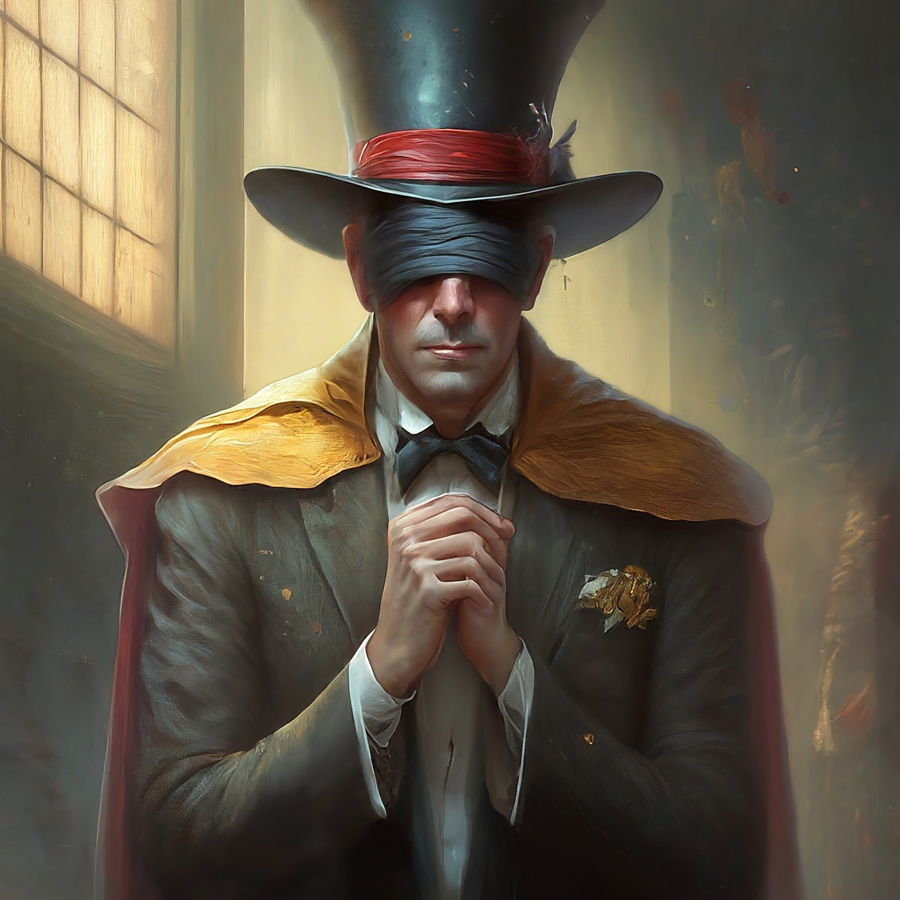
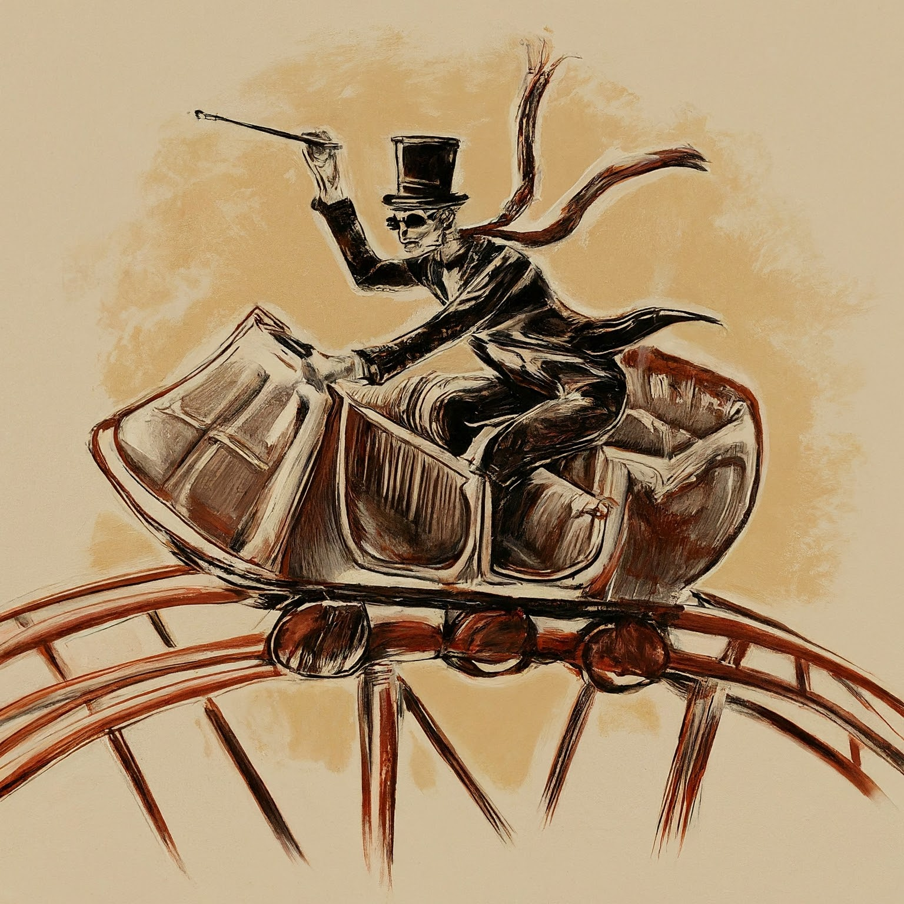
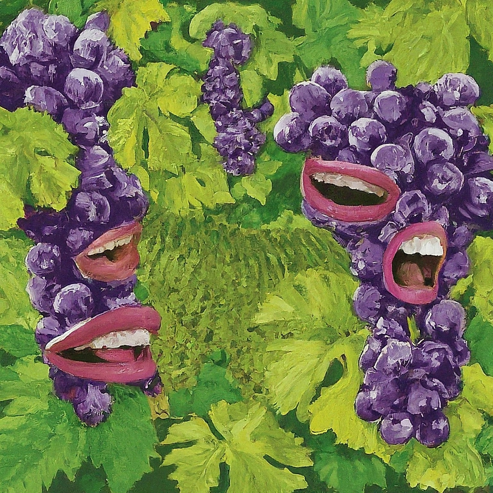
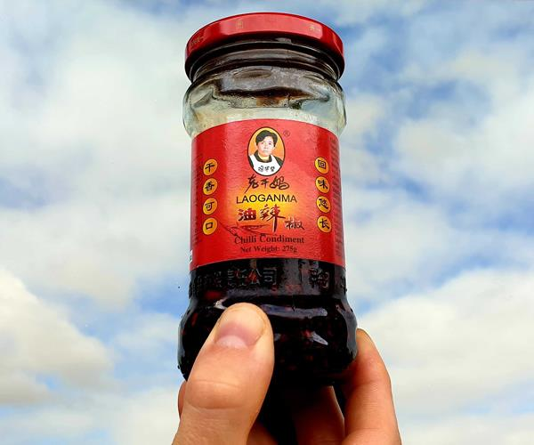

Review Story




Title: The Adventures of Pierre and the Talking Crystal
Once upon a time, in the beautiful country of France, there was a person named Pierre. Pierre was cheerful and hard-working. He worked at a vineyard all day and all night, taking care of the grapevines. He was patient and smart, probably the most successful member of his family.
One day, while Pierre was working in the vineyard, he forgot his lunch. He could smell the delicious scent of freshly baked bread from the nearby bakery. Pierre was hungry but either he could go to work or he could go to the store to buy some food. He decided to remain strict about his work and not give up.
As Pierre continued to work, he heard someone telling jokes nearby. He laughed and encouraged his fellow workers to remain focused. Pierre believed that with hard work and support, anything was possible.
After a long day in the vineyard, Pierre preferred to go on holiday. He liked to go sightseeing in Europe. He enjoyed visiting famous department stores and climbing towers to get a perfect view of the city.
One day, while on holiday in the south of France, Pierre went skiing in the mountains. It was an excellent day with fresh snow and clear skies. However, as he was skiing down the slope, he took a wrong turn and ended up lost in the dark forest.
Pierre tried to find his way back but could see nothing. He decided to continue skiing in one direction, hoping to arrive at a familiar place. Suddenly, he heard a bark and a voice calling out for help.
Following the sound, Pierre arrived at a small cabin where a blind person was trapped inside. The person had accidentally set their cabin on fire while cooking. Pierre quickly led the blind person outside to safety.
As they waited for the fire engine to arrive, Pierre apologized for getting lost and not being able to rescue the person sooner. The blind person thanked Pierre for his helpfulness and bravery.
Finally, the fire engine appeared, and the firefighters were able to extinguish the fire. Pierre helped the blind person return home safely. They exchanged greetings and addresses, promising to keep in touch.
From that day on, Pierre realized the value of being patient and supportive, even in difficult situations. He returned to his work at the vineyard with a renewed sense of purpose, knowing that he could make a difference in the lives of others. And somewhere in his heart, he cherished the memory of the talking crystal he found in the dark forest, a reminder of the extraordinary adventures life can bring.